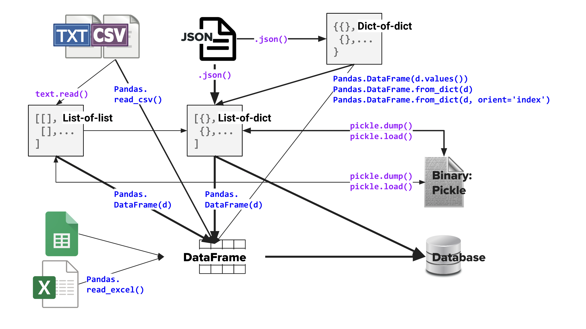

P05 READ Files
Contents
P05 READ Files#
Read Slide to know what is CSV and JSON
Read CSV (Metdho 1, 2, 3)
Read JSON
Load CSV and JSON by pandas
Eseential functions in Pandas
Convert data structures

Read/Write CSV#
資料來源：政府開放資料違規藥品廣告資料集
Get files#
若已經把ipynb下載回本機端，就只需要把相對位置作為資料路徑即可。
如果是都在colab上執行，就要先在程式中mount google drive，並把位置指到相對應的路徑。
Colab/jupyterlab. Read file via link#
在Colab上可以用wget指令，將該檔案讀回來，-o的意思是代表如果已經有一樣的檔案就覆寫（Overwrite）過去，-o後面是新的檔名，可以用此命名為比較好記的檔名，但我個人習慣保持一樣的檔名。wget的步驟是把檔案抓回Colab的工作環境中。下一步才是開啟檔案。
開啟檔案時，需要先開啟該檔案，並指到一個變數，例如下例中的f，並且指定要用什麼讀取模式來開啟檔案。
相關說明可見Python-File Handling
讀寫模式主要有三種，
r表讀取、w表直接從頭覆寫寫入、a為寫入新資料在檔案最後（Append的意思）。後面跟著一個
b的代表是binary檔案，例如wb、rb，初學者比較少用到，html、json、txt、csv等都是文字檔案，都不是binary檔案；如果是pdf、bin、docx就都是binary檔案。如果後面跟著一個
+的，r+代表可讀寫、w+代表可讀寫，且寫入時如果沒有該檔案，他會自動建立該檔案。
# Uncomment the following code when you run on colab or jupyter-lab
!wget https://raw.githubusercontent.com/p4css/py4css/main/data/drug_156_2.csv -O drug_156_2.csv
with open("drug_156_2.csv", "r", encoding="utf-8-sig") as f:
print(f)
print(type(f))
--2022-11-15 00:11:30-- https://raw.githubusercontent.com/p4css/py4css/main/data/drug_156_2.csv
Resolving raw.githubusercontent.com (raw.githubusercontent.com)... 185.199.109.133, 185.199.111.133, 185.199.110.133, ...
Connecting to raw.githubusercontent.com (raw.githubusercontent.com)|185.199.109.133|:443...
connected.
HTTP request sent, awaiting response...
200 OK
Length: 653424 (638K) [text/plain]
Saving to: 'drug_156_2.csv'
drug_156_2.csv 0%[ ] 0 --.-KB/s
drug_156_2.csv 77%[==============> ] 496.56K 2.41MB/s
drug_156_2.csv 100%[===================>] 638.11K 2.68MB/s in 0.2s
2022-11-15 00:11:33 (2.68 MB/s) - 'drug_156_2.csv' saved [653424/653424]
<_io.TextIOWrapper name='drug_156_2.csv' mode='r' encoding='utf-8-sig'>
<class '_io.TextIOWrapper'>
Colab. Mount drive then read#
Google Colab提供一個選項是把個人的Google Drive 掛載（Mount）到Colab的執行環境中，意味著可以用程式直接讀取個人放在Google drive裡面的資料。
# Uncomment the following code when you run on colab
## Mount google drive as data
# from google.colab import drive
# drive.mount('/content/drive')
##data path using google colab
# gdrive_path = "/content/drive/My Drive/Colab Notebooks/PSS1092/data/14196_drug_adv.csv"
Jupyterlab. Read from local PC#
如果是在個人PC上，用VS Code或Jupyter等自行安裝的編輯器寫作的話，那就需要在程式碼中指定該檔案的路徑，通常以指定相對路徑為佳。相關說明如相對路徑
如果.ipynb和test.csv在同一個資料夾內，用
test.csv或者./test.csv便可讀取在同一個資料夾內的檔案。如果test.csv被放置在.ipynb所在位置的test資料夾中，用
test/test.csv便可讀取，意即，在同一層中的test資料夾中的test.csv。如果test.csv被放置在.ipynb所在位置的外部資料夾中，那就要用
../test.csv往外跳出這層資料夾，每多一個..就代表往外跳一層，例如../../test.csv代表往外跳兩層
# Be sure to specify right path
relative_path = "../_build/html/data/drug_156_2.csv"
# Assign gdrive_path as my fin_path(file_in_path)
# fin_path = gdrive_path # if run on google drive
fin_path = relative_path
Open files#
如果直接把開好的檔案Print出來的話，會看見的是f這個變數的變數內容。還需要用f.readlines()或f.read()函式來讀取文字內容。這兩者的差別在於，f.readlines()在讀取的時候如果遇到換行符號就會自動斷開成為一個字串，最後會傳回一個被換行符號所斷開的字串List。而f.read()則是傳回包含整個檔案的字串，之後我們可以自己在寫
with open(fin_path, "r", encoding="utf-8-sig") as f:
print(f)
print(type(f))
<_io.TextIOWrapper name='../_build/html/data/drug_156_2.csv' mode='r' encoding='utf-8-sig'>
<class '_io.TextIOWrapper'>
當我用f.read()讀取純文字檔案內的內容時，整個內容會被轉為單一string。由於我加了Slicing f.read()[:400]來取出前400個字，剛好可以看見第一列的詮釋資料、第一二三筆資料，但到了第三筆資料的一半，便超過400個字。
with open("drug_156_2.csv", "r") as f:
print(f.read()[:400])
違規產品名稱,違規廠商名稱或負責人,處分機關,處分日期,處分法條,違規情節,刊播日期,刊播媒體類別,刊播媒體,查處情形
"維他肝","豐怡生化科技股份有限公司/朱O","","03 31 2022 12:00AM","","廣告內容誇大不實","02 2 2022 12:00AM","廣播電台","噶瑪蘭廣播電台股份有限公司",""
"現貨澳洲Swisse ULTIBOOST維他命D片calcium vitamin VITAMIN D400粒 補鈣 骨頭","張O雯/張O雯","","01 21 2022 12:00AM","","廣告違規","11 30 2021 12:00AM","網路","蝦皮購物","輔導結案"
"✈日本 代購 參天製藥 處方簽點眼液","蘇O涵/蘇O涵","","01 25 2022 12:00AM","","無照藥商","08 27 2021 12:00AM
Read Files#
當規劃要讀進一個CSV檔時，我可能有三種做法：
全部靠自己逐行讀，用
readlines()來判斷換行符號，將所有資料依照換行符號切割為list內的Element，再將每個Elements遇到逗號進行切割。利用
csv.reader()函式幫我把文字資料轉換成python物件利用pandas的函式讀檔
Read CSV by readlines()#
前面說到，CSV檔的每一列都有一個\n做換行，所以，我要讀取CSV就可以用f.readlines()讀進每一列的資料，該函式會遇到\n即切開為一行，切開後的資料就存進一個外層List中。之後，我可以針對切開的每一列資料（例如底下的line），遇到逗號就斷開line.split(",")，每一列就會變成一個List。所以最後會產生一個兩層的List（意即List of List）。
.read()是讀取整個檔案變成一個字串，因此，必須在後面跟著用split()函式，讓這個大字串遇到\n就會切成分行的小字串。.readllines()是上面兩個步驟的簡短版，讀檔過程遇到\n會自動把大字串切為數個小字串並放到List中。
all_list = []
with open(fin_path, "r", encoding="utf-8-sig") as f:
for line in f.readlines():
# for line in f.read().split("\n"):
row = line.split(",")
all_list.append(row)
s.split("\n")[0].split(",")
---------------------------------------------------------------------------
NameError Traceback (most recent call last)
Input In [7], in <cell line: 1>()
----> 1 s.split("\n")[0].split(",")
NameError: name 's' is not defined
all_list[:3]
[['違規產品名稱',
'違規廠商名稱或負責人',
'處分機關',
'處分日期',
'處分法條',
'違規情節',
'刊播日期',
'刊播媒體類別',
'刊播媒體',
'查處情形\n'],
['"維他肝"',
'"豐怡生化科技股份有限公司/朱O"',
'""',
'"03 31 2022 12:00AM"',
'""',
'"廣告內容誇大不實"',
'"02 2 2022 12:00AM"',
'"廣播電台"',
'"噶瑪蘭廣播電台股份有限公司"',
'""\n'],
['"現貨澳洲Swisse ULTIBOOST維他命D片calcium vitamin VITAMIN D400粒 補鈣 骨頭"',
'"張O雯/張O雯"',
'""',
'"01 21 2022 12:00AM"',
'""',
'"廣告違規"',
'"11 30 2021 12:00AM"',
'"網路"',
'"蝦皮購物"',
'"輔導結案"\n']]
# Explore the data
print(type(all_list))
print(len(all_list))
print(all_list[:3])
<class 'list'>
2973
[['違規產品名稱', '違規廠商名稱或負責人', '處分機關', '處分日期', '處分法條', '違規情節', '刊播日期', '刊播媒體類別', '刊播媒體', '查處情形'], ['"維他肝"', '"豐怡生化科技股份有限公司/朱O"', '""', '"03 31 2022 12:00AM"', '""', '"廣告內容誇大不實"', '"02 2 2022 12:00AM"', '"廣播電台"', '"噶瑪蘭廣播電台股份有限公司"', '""'], ['"現貨澳洲Swisse ULTIBOOST維他命D片calcium vitamin VITAMIN D400粒 補鈣 骨頭"', '"張O雯/張O雯"', '""', '"01 21 2022 12:00AM"', '""', '"廣告違規"', '"11 30 2021 12:00AM"', '"網路"', '"蝦皮購物"', '"輔導結案"']]
# print the first 5 lists by for-loop
for li in all_list[:5]:
print(li)
# print the length of data (the length of the outer list)
print(len(all_list))
# print element by index with two dimensions
print(all_list[1][-2])
['違規產品名稱', '違規廠商名稱或負責人', '處分機關', '處分日期', '處分法條', '違規情節', '刊播日期', '刊播媒體類別', '刊播媒體', '查處情形']
['"維他肝"', '"豐怡生化科技股份有限公司/朱O"', '""', '"03 31 2022 12:00AM"', '""', '"廣告內容誇大不實"', '"02 2 2022 12:00AM"', '"廣播電台"', '"噶瑪蘭廣播電台股份有限公司"', '""']
['"現貨澳洲Swisse ULTIBOOST維他命D片calcium vitamin VITAMIN D400粒 補鈣 骨頭"', '"張O雯/張O雯"', '""', '"01 21 2022 12:00AM"', '""', '"廣告違規"', '"11 30 2021 12:00AM"', '"網路"', '"蝦皮購物"', '"輔導結案"']
['"✈日本 代購 參天製藥 處方簽點眼液"', '"蘇O涵/蘇O涵"', '""', '"01 25 2022 12:00AM"', '""', '"無照藥商"', '"08 27 2021 12:00AM"', '"網路"', '"蝦皮購物"', '""']
['"✈日本 代購 TSUMURA 中將湯 24天包裝"', '"蘇O涵/蘇O涵"', '""', '"01 25 2022 12:00AM"', '""', '"無照藥商"', '"08 27 2021 12:00AM"', '"網路"', '"蝦皮購物"', '"輔導結案"']
2973
"噶瑪蘭廣播電台股份有限公司"
Read by csv.reader()#
csv_read()並非預載於python runtime environment的基本函式，因此要import csv library，才可以使用該library中的csv_read()
import csv
with open(fin_path, "r", encoding="utf-8-sig") as csv_file:
csv_reader = csv.reader(csv_file, delimiter=',') # delimiter: \t , ;
data_list = list(csv_reader)
type(data_list)
data_list[0]
data_list[:3]
[['違規產品名稱',
'違規廠商名稱或負責人',
'處分機關',
'處分日期',
'處分法條',
'違規情節',
'刊播日期',
'刊播媒體類別',
'刊播媒體',
'查處情形'],
['維他肝',
'豐怡生化科技股份有限公司/朱O',
'',
'03 31 2022 12:00AM',
'',
'廣告內容誇大不實',
'02 2 2022 12:00AM',
'廣播電台',
'噶瑪蘭廣播電台股份有限公司',
''],
['現貨澳洲Swisse ULTIBOOST維他命D片calcium vitamin VITAMIN D400粒 補鈣 骨頭',
'張O雯/張O雯',
'',
'01 21 2022 12:00AM',
'',
'廣告違規',
'11 30 2021 12:00AM',
'網路',
'蝦皮購物',
'輔導結案']]
# Exploring data content, the first and the second elements
print(data_list[0])
print(data_list[1])
print(data_list[1][-2])
print(len(data_list))
# for row in data_list: # never do this if you are not sure that the number of lines
# print(row)
['違規產品名稱', '違規廠商名稱或負責人', '處分機關', '處分日期', '處分法條', '違規情節', '刊播日期', '刊播媒體類別', '刊播媒體', '查處情形']
['維他肝', '豐怡生化科技股份有限公司/朱O', '', '03 31 2022 12:00AM', '', '廣告內容誇大不實', '02 2 2022 12:00AM', '廣播電台', '噶瑪蘭廣播電台股份有限公司', '']
噶瑪蘭廣播電台股份有限公司
2973
Write CSV#
如果要將list-of-list的資料寫回CSV檔的話，可以使用csv這個函式庫的writer.writerows()函式，就可以直接把一個list-of-list寫回CSV檔
import csv
with open("output.csv", "w") as fout:
writer = csv.writer(fout)
writer.writerows(data_list)
import csv
with open("output.csv", "w") as fout:
writer = csv.writer(fout)
writer.writerows(data_list)
但如果你有一種「寫程式的浪漫」想自己操控寫回一個文字檔案的每一行每一個字的話，可以用下面的方式寫回去。
把第二層list的每一個元素用,給黏起來，在後面再黏上一個\n。
with open("output.csv", "w") as fout:
for row in data_list:
fout.write("%s\n" % ','.join(str(cell) for cell in row))
with open("output.csv", "w") as fout:
for row in data_list:
fout.write("%s\n" % ','.join(str(cell) for cell in row))
可以寫一些測試程式自己觀察看看
alist = [[1, 2, 3], [4, 5, 6], [7, 8, 9], [11, 12, 13]]
blist = [3, 2, 1]
",".join(str(b) for b in blist)
'3,2,1'
[str(b) for b in blist]
['3', '2', '1']
",".join(a-list)是一個非常好用的字串函式，可以把一個list中的每個項目用某個符號（例如前面的,)黏成字串。
",".join(str(a) for a in alist[0])
'1,2,3'
[str(cell) for cell in alist[0]]
['1', '2', '3']
Read/Write JSON#
Dump and load JSON#
通常把資料寫到檔案中稱為dump out（或者save、write視程式語言的函式而不同），而把資料從檔案中讀成程式語言所能處理的結構則稱為load（或read）。無論是讀入資料或寫出資料，都要先開啟檔案（如open('sample.json', 'w')）。檔案開啟後，才可以將資料寫入。完整的寫法如下：
json.dump(sample_data, open('sample.json', 'w'))
一個更常見的寫法如下，其將開檔後的結果指到一個變項fout，藉此把資料dump到檔案中。
with open('sample.json', 'w') as fout:
json.dump(sample_data, fout)
讀取JSON則分讀取字串和直接讀取檔案兩種：
json.loads(str)讀取字串：例如像讀取ubike的線上資料，就是先把抓回來的資料轉文字後當成字串讀取入json。json.load(f)直接讀取檔案：例如適才把一個list of dictionary存成json後，可以用json.load(f)讀成python的list of dictionary
Dump (Write-out)#
## dump out
import json
sample_data = [{"site":"基隆","AQI":38,"PM25":8},\
{"site":"新店","AQI":40,"PM25":9},\
{"site":"苗栗","AQI":76,"PM25":11}]
json.dump(sample_data, open('sample.json', 'w'))
# with open('sample.json', 'w') as fout:
# json.dump(sample_data, fout)
Load (Read-in)#
## load back
with open("sample.json", "r") as f:
new_data = json.load(f)
new_data
[{'site': '基隆', 'AQI': 38, 'PM25': 8},
{'site': '新店', 'AQI': 40, 'PM25': 9},
{'site': '苗栗', 'AQI': 76, 'PM25': 11}]
Example: Loading json: ubike#
這個例子載入了台北市ubike的即時資料，該資料以JSON格式儲存，但他並非List of dict(s)的型態，而是Dict of dict(s)的型態，在最外面亦多一層Dictionary包裹著資料和回傳是否傳輸成功的確認碼。因此，和一般的例子比較起來，這個例子必須要找到資料的節點，在解出為Python的物件時，也要考慮如何處理資料中兩層的Dictionary。
Step 1. requests to get data from internet#
在以下的程式碼中，我用requests這個套件發出一個get()要求，然後我嘗試列印出一些該要求的回傳資料，以確認我成功地獲得我要求的資料。
import requests
import json
response = requests.get('https://tcgbusfs.blob.core.windows.net/blobyoubike/YouBikeTP.gz')
print(response)
print(response.status_code)
print(response.headers)
print(type(response)) # <class 'requests.models.Response'>
print(type(response.text)) # <class 'str'>
<Response [200]>
200
{'Content-Length': '30368', 'Content-Type': 'application/octet-stream', 'Content-Encoding': 'gzip', 'Content-MD5': 'rGejqPTRi+JSoGcA8PRrFA==', 'Last-Modified': 'Tue, 04 Oct 2022 03:51:56 GMT', 'ETag': '0x8DAA5BBC84CEBE1', 'Server': 'Windows-Azure-Blob/1.0 Microsoft-HTTPAPI/2.0', 'x-ms-request-id': '6cd9f2b2-201e-0027-56a4-d7609a000000', 'x-ms-version': '2009-09-19', 'x-ms-lease-status': 'unlocked', 'x-ms-blob-type': 'BlockBlob', 'Access-Control-Allow-Origin': '*', 'Date': 'Tue, 04 Oct 2022 03:52:04 GMT'}
<class 'requests.models.Response'>
<class 'str'>
把前500個字元印出來可以看到這裡面只有大括號，而且在資料（retVal所對應到的那個大括號）外面還有一層，也就是retCode和retVal所在的那一層大括號。
response.text[:500]
'{"retCode":1,"retVal":{"0001":{"sno": "0001", "sna": "捷運市政府站(3號出口)", "tot": "88", "sbi": "2", "sarea": "信義區", "mday": "20221004115016", "lat": "25.0408578889", "lng": "121.567904444", "ar": "忠孝東路/松仁路(東南側)", "sareaen": "Xinyi Dist.", "snaen": "MRT Taipei City Hall Stataion(Exit 3)-2", "aren": "The S.W. side of Road Zhongxiao East Road & Road Chung Yan.", "bemp": "80", "act": "1"},"0002":{"sno": "0002", "sna": "捷運國父紀念館站(2號出口)", "tot": "16", "sbi": "0", "sarea": "大安區", "mday": "20221004115037", "la'
Step 2. Convert json text to python objects#
json_obj = json.loads(response.text)
print(type(json_obj))
print(type(json_obj["retVal"]))
print(type(json_obj["retCode"]))
print(len(json_obj["retVal"]))
<class 'dict'>
<class 'dict'>
<class 'int'>
371
json.dump(json_obj, open('ubike.json', 'w'))
Write to Pickle#
Pickle有點類似暫存檔，把什麼東西dump-out，當load-in回來時就會是原本的樣子。不用再重新Parsing。甚至如果原本資料型態
Write#
import pickle
with open("output.p", "wb") as fout:
pickle.dump(json_obj, fout)
Load#
with open("output.p", "rb") as fin:
ubike_data = pickle.load(fin)
import pickle
with open("output.p", "wb") as fout:
pickle.dump(json_obj, fout)
with open("output.p", "rb") as fin:
ubike_data = pickle.load(fin)
ubike_data.keys()
dict_keys(['retCode', 'retVal'])
Use Pandas#
CSV to Pandas dataframe#
import pandas as pd
df = pd.read_csv(fin_path, on_bad_lines='skip')
df
| 違規產品名稱 | 違規廠商名稱或負責人 | 處分機關 | 處分日期 | 處分法條 | 違規情節 | 刊播日期 | 刊播媒體類別 | 刊播媒體 | 查處情形 | |
|---|---|---|---|---|---|---|---|---|---|---|
| 0 | 維他肝 | 豐怡生化科技股份有限公司/朱O | NaN | 03 31 2022 12:00AM | NaN | 廣告內容誇大不實 | 02 2 2022 12:00AM | 廣播電台 | 噶瑪蘭廣播電台股份有限公司 | NaN |
| 1 | 現貨澳洲Swisse ULTIBOOST維他命D片calcium vitamin VITAM... | 張O雯/張O雯 | NaN | 01 21 2022 12:00AM | NaN | 廣告違規 | 11 30 2021 12:00AM | 網路 | 蝦皮購物 | 輔導結案 |
| 2 | ✈日本 代購 參天製藥 處方簽點眼液 | 蘇O涵/蘇O涵 | NaN | 01 25 2022 12:00AM | NaN | 無照藥商 | 08 27 2021 12:00AM | 網路 | 蝦皮購物 | NaN |
| 3 | ✈日本 代購 TSUMURA 中將湯 24天包裝 | 蘇O涵/蘇O涵 | NaN | 01 25 2022 12:00AM | NaN | 無照藥商 | 08 27 2021 12:00AM | 網路 | 蝦皮購物 | 輔導結案 |
| 4 | _Salty.shop 日本代購 樂敦小花 | 曾O嫺/曾O嫺 | NaN | 02 17 2022 12:00AM | 藥事法第27條 | 無照藥商 | 12 6 2021 12:00AM | 網路 | 蝦皮購物 | 處分結案 |
| ... | ... | ... | ... | ... | ... | ... | ... | ... | ... | ... |
| 2967 | *健人館* 千鶴薄荷棒11g*2個 | 新東海藥局/ O聰敏 | NaN | NaN | 藥事法第27條 | 標示內容與規定不符 | 05 6 2020 12:00AM | 網路 | NaN | 處分結案 |
| 2968 | （現貨）GO LIVER DETOX 高之源 護肝排毒膠囊 120粒 | 連O毅/連O毅 | NaN | 06 30 2020 12:00AM | 藥事法第27條 | 無照藥商 | 02 5 2020 12:00AM | 網路 | 蝦皮購物 | 處分結案 |
| 2969 | 日本帶回樂敦小花新鮮貨 | 張O萍/張O萍 | NaN | 06 23 2020 12:00AM | NaN | 難以判定產品屬性 | 03 10 2020 12:00AM | 網路 | 蝦皮購物 | 輔導結案 |
| 2970 | 全新 洗眼杯 可平信 洗眼 小林製藥 小花 ROHTO Lycee 可搭配生理食鹽水 空汙 ... | 盧O/盧O | NaN | 09 4 2020 12:00AM | NaN | 無照藥商 | 03 10 2020 12:00AM | 網路 | 蝦皮購物 | 輔導結案 |
| 2971 | 0.9%生理食鹽水 20ml 預購最低價 每人限購2盒 | 張O軒/張O軒 | NaN | 06 11 2020 12:00AM | NaN | 無照藥商 | 03 31 2020 12:00AM | 網路 | 蝦皮購物 | NaN |
2972 rows × 10 columns
Case 2: Read url directly by pandas#
至https://data.taipei/ 搜尋「結婚」可找到「臺北市婚姻概況按月別」後，對「下載資料」按右鍵複製連結即得https://data.taipei/api/getDatasetInfo/downloadResource?id=bc83f1a0-2192-4e06-acc2-4d2a0bc9121b&rid=d4ce96ce-a463-40dc-95b2-0c88d81a5427
(無法直接讀取URL，只能用下載的) Find an interesting dataset on https://data.gov.tw/ (e.g.) 結婚對數按婚姻類型、性別及年齡分(按登記) https://data.gov.tw/dataset/130547 . Click “檢視資料” to obtain data link https://data.moi.gov.tw/MoiOD/System/DownloadFile.aspx?DATA=50E1F8E9-3A75-45A7-A50D-306CC625A700
import pandas as pd
url = 'https://data.taipei/api/getDatasetInfo/downloadResource?id=bc83f1a0-2192-4e06-acc2-4d2a0bc9121b&rid=d4ce96ce-a463-40dc-95b2-0c88d81a5427'
df = pd.read_csv(url, on_bad_lines="skip", encoding='big5')
df
| 年月別 | 結婚對數[對] | 結婚對數中相同性別對數[對] | 結婚對數中對象為大陸港澳配偶對數[對] | 結婚對數中對象為其他外籍配偶對數[對] | 結婚對數中配偶為大陸港澳及其他外籍人士之對數比率[%] | 結婚人數中大陸港澳及其他外籍配偶之人數比率[%] | 粗結婚率/月[千分比] | 粗結婚率/折合年率[千分比] | 離婚對數[對] | 離婚對數中相同性別對數[對] | 離婚對數中對象為大陸港澳配偶對數[對] | 離婚對數中對象為其他外籍配偶對數[對] | 離婚對數中配偶為大陸港澳及其他外籍人士之對數比率[%] | 離婚人數中大陸港澳及其他外籍配偶之人數比率[%] | 粗離婚率/月[千分比] | 粗離婚率/折合年率[千分比] | |
|---|---|---|---|---|---|---|---|---|---|---|---|---|---|---|---|---|---|
| 0 | 87年1月 | 2158 | - | - | 75 | 3.48 | 1.74 | 0.83 | 9.78 | 344 | - | - | 11 | 3.20 | 1.60 | 0.13 | 1.56 |
| 1 | 87年2月 | 1926 | - | - | 87 | 4.52 | 2.26 | 0.74 | 9.65 | 423 | - | - | 15 | 3.55 | 1.77 | 0.16 | 2.12 |
| 2 | 87年3月 | 1755 | - | - | 106 | 6.04 | 3.02 | 0.67 | 7.94 | 479 | - | - | 12 | 2.51 | 1.25 | 0.18 | 2.17 |
| 3 | 87年4月 | 1402 | - | - | 82 | 5.85 | 2.92 | 0.54 | 6.54 | 487 | - | - | 8 | 1.64 | 0.82 | 0.19 | 2.27 |
| 4 | 87年5月 | 1348 | - | - | 93 | 6.90 | 3.45 | 0.52 | 6.08 | 470 | - | - | 16 | 3.40 | 1.70 | 0.18 | 2.12 |
| ... | ... | ... | ... | ... | ... | ... | ... | ... | ... | ... | ... | ... | ... | ... | ... | ... | ... |
| 291 | 111年4月 | 695 | 20 | 40 | 61 | 14.53 | 7.27 | 0.28 | 3.40 | 350 | 3 | 27 | 20 | 13.43 | 6.71 | 0.14 | 1.71 |
| 292 | 111年5月 | 1478 | 25 | 29 | 74 | 6.97 | 3.48 | 0.60 | 7.03 | 327 | 4 | 25 | 24 | 14.98 | 7.49 | 0.13 | 1.56 |
| 293 | 111年6月 | 1003 | 15 | 39 | 82 | 12.06 | 6.03 | 0.41 | 4.95 | 378 | 2 | 29 | 27 | 14.81 | 7.41 | 0.15 | 1.86 |
| 294 | 111年7月 | 999 | 26 | 50 | 85 | 13.51 | 6.76 | 0.41 | 4.77 | 386 | 3 | 32 | 26 | 15.03 | 7.51 | 0.16 | 1.84 |
| 295 | 111年8月 | 485 | 20 | 47 | 90 | 28.25 | 14.12 | 0.20 | 2.32 | 425 | 2 | 41 | 29 | 16.47 | 8.24 | 0.17 | 2.03 |
296 rows × 17 columns
Pandas to CSV#
df.to_csv("out.csv")
Json to pandas: youbike#
如果要載入的JSON資料檔是表述為a List of dict，那麼pandas套件有函式可以將JSON字串轉為data frame。可以從以下的stackoverflow網站找到類似的函式。但如果資料並非典型List of dict的型態，那麼被解出來的資料常不會是所預期的List of dictionary的型態。不過，總之JSON解析後所轉成的Python物件必然是 https://stackoverflow.com/questions/20638006/convert-list-of-dictionaries-to-dataframe
import pandas as pd
# pd.read_json('https://tcgbusfs.blob.core.windows.net/blobyoubike/YouBikeTP.gz')
# df = pd.DataFrame(json_obj)
# df = pd.DataFrame(json_obj['retVal'])
# df = pd.DataFrame.from_dict(json_obj['retVal'])
df = pd.DataFrame.from_dict(json_obj['retVal'], orient='index')
# df.head()
df
| sno | sna | tot | sbi | sarea | mday | lat | lng | ar | sareaen | snaen | aren | bemp | act | |
|---|---|---|---|---|---|---|---|---|---|---|---|---|---|---|
| 0001 | 0001 | 捷運市政府站(3號出口) | 88 | 2 | 信義區 | 20221004115016 | 25.0408578889 | 121.567904444 | 忠孝東路/松仁路(東南側) | Xinyi Dist. | MRT Taipei City Hall Stataion(Exit 3)-2 | The S.W. side of Road Zhongxiao East Road & Ro... | 80 | 1 |
| 0002 | 0002 | 捷運國父紀念館站(2號出口) | 16 | 0 | 大安區 | 20221004115037 | 25.041254 | 121.55742 | 忠孝東路四段/光復南路口(西南側) | Daan Dist. | MRT S.Y.S Memorial Hall Stataion(Exit 2.) | Sec,4. Zhongxiao E.Rd/GuangFu S. Rd | 16 | 1 |
| 0004 | 0004 | 市民廣場 | 32 | 5 | 信義區 | 20221004115042 | 25.0360361111 | 121.562325 | 市府路/松壽路(西北側)(鄰近台北101/台北世界貿易中心/台北探索館) | Xinyi Dist. | Citizen Square | The N.W. side of Road Shifu & Road Song Shou. | 27 | 1 |
| 0005 | 0005 | 興雅國中 | 32 | 3 | 信義區 | 20221004115035 | 25.0365638889 | 121.5686639 | 松仁路/松仁路95巷(東南側)(鄰近信義商圈/台北信義威秀影城) | Xinyi Dist. | Xingya Jr. High School | The S.E. side of Road Songren & Ln. 95, Songre... | 28 | 1 |
| 0006 | 0006 | 臺北南山廣場 | 54 | 34 | 信義區 | 20221004115036 | 25.034047 | 121.565973 | 松智路/松廉路(東北側) (鄰近台北101/信義商圈/台北信義威秀影城) | Xinyi Dist. | NAN SHAN PLAZA | The N.E. side of Road Song Zhi & Road Song Lian. | 20 | 1 |
| ... | ... | ... | ... | ... | ... | ... | ... | ... | ... | ... | ... | ... | ... | ... |
| 0401 | 0401 | 南京新生路口 | 16 | 6 | 中山區 | 20221004115039 | 25.051944 | 121.527661 | 新生北路一段 / 南京東路一段口(橋墩下方)(鄰近林森公園/康樂公園) | Zhongshan Dist. | Nanjing & Xinsheng Intersection | Sec. 1, Xinsheng N. Rd. / Sec. 1, Nanjing E. Rd. | 10 | 1 |
| 0402 | 0402 | 下灣公園 | 12 | 2 | 內湖區 | 20221004115016 | 25.065159 | 121.595611 | 民權東路六段206巷 / 民權東路六段190巷75弄口 | Neihu Dist. | Siawan Park | Ln. 206, Sec. 6, Minquan E. Rd. / Aly. 75, Ln.... | 10 | 1 |
| 0403 | 0403 | 捷運內湖站(1號出口) | 10 | 1 | 內湖區 | 20221004115036 | 25.083868 | 121.593929 | 成功路四段182巷 / 成功路四段182巷6弄口(東南側) | Neihu Dist. | MRT Neihu Sta.1(Exit.1) | Ln. 182, Sec. 4, Chenggong Rd. / Aly. 6, Ln. 1... | 9 | 1 |
| 0404 | 0404 | 民族延平路口 | 10 | 7 | 大同區 | 20221004115039 | 25.068653 | 121.510569 | 民族西路 310 號前方 | Datong Dist. | Minzu & Yanping Intersection | No.310, Minzu W. Rd. | 3 | 1 |
| 0405 | 0405 | 捷運科技大樓站(台北教育大學) | 46 | 12 | 大安區 | 20221004115016 | 25.024685 | 121.544156 | 和平東路二段134號(前方) | Daan Dist. | MRT Technology Building Station | No. 134, Heping E. Rd. (front) | 32 | 1 |
371 rows × 14 columns
df = pd.DataFrame(json_obj['retVal'].values())
df.head()
| sno | sna | tot | sbi | sarea | mday | lat | lng | ar | sareaen | snaen | aren | bemp | act | |
|---|---|---|---|---|---|---|---|---|---|---|---|---|---|---|
| 0 | 0001 | 捷運市政府站(3號出口) | 88 | 2 | 信義區 | 20221004115016 | 25.0408578889 | 121.567904444 | 忠孝東路/松仁路(東南側) | Xinyi Dist. | MRT Taipei City Hall Stataion(Exit 3)-2 | The S.W. side of Road Zhongxiao East Road & Ro... | 80 | 1 |
| 1 | 0002 | 捷運國父紀念館站(2號出口) | 16 | 0 | 大安區 | 20221004115037 | 25.041254 | 121.55742 | 忠孝東路四段/光復南路口(西南側) | Daan Dist. | MRT S.Y.S Memorial Hall Stataion(Exit 2.) | Sec,4. Zhongxiao E.Rd/GuangFu S. Rd | 16 | 1 |
| 2 | 0004 | 市民廣場 | 32 | 5 | 信義區 | 20221004115042 | 25.0360361111 | 121.562325 | 市府路/松壽路(西北側)(鄰近台北101/台北世界貿易中心/台北探索館) | Xinyi Dist. | Citizen Square | The N.W. side of Road Shifu & Road Song Shou. | 27 | 1 |
| 3 | 0005 | 興雅國中 | 32 | 3 | 信義區 | 20221004115035 | 25.0365638889 | 121.5686639 | 松仁路/松仁路95巷(東南側)(鄰近信義商圈/台北信義威秀影城) | Xinyi Dist. | Xingya Jr. High School | The S.E. side of Road Songren & Ln. 95, Songre... | 28 | 1 |
| 4 | 0006 | 臺北南山廣場 | 54 | 34 | 信義區 | 20221004115036 | 25.034047 | 121.565973 | 松智路/松廉路(東北側) (鄰近台北101/信義商圈/台北信義威秀影城) | Xinyi Dist. | NAN SHAN PLAZA | The N.E. side of Road Song Zhi & Road Song Lian. | 20 | 1 |
Pandas to JSON#
https://pandas.pydata.org/docs/reference/api/pandas.DataFrame.to_json.html
import json
df = pd.DataFrame(
[["s01", "albert"], ["s02", "bob"]],
index=["s01", "s02"],
columns=["sid", "sname"]
)
df
| sid | sname | |
|---|---|---|
| s01 | s01 | albert |
| s02 | s02 | bob |
df.to_json("output.json", orient="values")
Mode 1: orient=”split”#
上半部程式碼只是將Pandas dataframe轉為符合json的文字型態，所以如果測試type(result)會獲得<class 'str'>字串的結果，實際把內容列印出來也是字串型態的{"columns":["sid","sname"],"index":["s01","s02"],"data":[["s01","albert"],["s02","bob"]]}。
result = df.to_json(orient="split")
print(type(result))
print(result)
parsed = json.loads(result)
print(json.dumps(parsed, indent=4))
<class 'str'>
{"columns":["sid","sname"],"index":["s01","s02"],"data":[["s01","albert"],["s02","bob"]]}
{
"columns": [
"sid",
"sname"
],
"index": [
"s01",
"s02"
],
"data": [
[
"s01",
"albert"
],
[
"s02",
"bob"
]
]
}
Mode 2: orient=”records”#
Save as list of dict
result = df.to_json(orient="records")
parsed = json.loads(result)
print(json.dumps(parsed, indent=4))
[
{
"sid": "s01",
"sname": "albert"
},
{
"sid": "s02",
"sname": "bob"
}
]
Mode 3: orient=”index”#
Save as dict-of-dict
result = df.to_json(orient="index")
parsed = json.loads(result)
print(json.dumps(parsed, indent=4))
{
"s01": {
"sid": "s01",
"sname": "albert"
},
"s02": {
"sid": "s02",
"sname": "bob"
}
}
Mode 4: orient=”values”#
Save as list-of-list
result = df.to_json(orient="values")
parsed = json.loads(result)
print(json.dumps(parsed, indent=4))
[
[
"s01",
"albert"
],
[
"s02",
"bob"
]
]
Convert csv to json and back#
Convert dict-of-dict to list-of-dict#
現在我嘗試要把Dictionary of dictionry的資料整理為List of dictionary的型態。要這麼做並不難，我只需要把所有內層的dictionary取出來，一一append()到一個空的List即可。最後，我把這樣的結構用pd.DataFrame()轉為一個pandas的Data frame。
import pandas as pd
all_list = []
for k, v in json_obj["retVal"].items():
all_list.append(v)
## convert a list of dictionries to a data frame
df = pd.DataFrame(all_list)
df.head()
| sno | sna | tot | sbi | sarea | mday | lat | lng | ar | sareaen | snaen | aren | bemp | act | |
|---|---|---|---|---|---|---|---|---|---|---|---|---|---|---|
| 0 | 0001 | 捷運市政府站(3號出口) | 88 | 6 | 信義區 | 20220919140825 | 25.0408578889 | 121.567904444 | 忠孝東路/松仁路(東南側) | Xinyi Dist. | MRT Taipei City Hall Stataion(Exit 3)-2 | The S.W. side of Road Zhongxiao East Road & Ro... | 77 | 1 |
| 1 | 0002 | 捷運國父紀念館站(2號出口) | 16 | 4 | 大安區 | 20220919140833 | 25.041254 | 121.55742 | 忠孝東路四段/光復南路口(西南側) | Daan Dist. | MRT S.Y.S Memorial Hall Stataion(Exit 2.) | Sec,4. Zhongxiao E.Rd/GuangFu S. Rd | 11 | 1 |
| 2 | 0004 | 市民廣場 | 32 | 15 | 信義區 | 20220919140840 | 25.0360361111 | 121.562325 | 市府路/松壽路(西北側)(鄰近台北101/台北世界貿易中心/台北探索館) | Xinyi Dist. | Citizen Square | The N.W. side of Road Shifu & Road Song Shou. | 17 | 1 |
| 3 | 0005 | 興雅國中 | 32 | 26 | 信義區 | 20220919140827 | 25.0365638889 | 121.5686639 | 松仁路/松仁路95巷(東南側)(鄰近信義商圈/台北信義威秀影城) | Xinyi Dist. | Xingya Jr. High School | The S.E. side of Road Songren & Ln. 95, Songre... | 6 | 1 |
| 4 | 0006 | 臺北南山廣場 | 54 | 42 | 信義區 | 20220919140842 | 25.034047 | 121.565973 | 松智路/松廉路(東北側) (鄰近台北101/信義商圈/台北信義威秀影城) | Xinyi Dist. | NAN SHAN PLAZA | The N.E. side of Road Song Zhi & Road Song Lian. | 12 | 1 |
Converting csv to json#
現在我想做的是，假設我有一個檔案是CSV檔，但我希望用手動方式把它改為JSON檔，要怎麼做？做法其實就是先把CSV第一列取出來儲存為Key，然後把這個Key一一和每一列的值給對應起來結合成一個又一個的Dictionary，最後把每列所產生的Dictionary用append()加入一個List中，就會是一個List of dictionaries結構的JSON格式。
all_list = []
with open(fin_path, "r", encoding="utf-8-sig") as f:
for line in f.read().split("\n"):
row = line.split(",")
all_list.append(row)
# print(len(row))
print(all_list[1][-2])
print(all_list[1])
keys = all_list[0]
"噶瑪蘭廣播電台股份有限公司"
['"維他肝"', '"豐怡生化科技股份有限公司/朱O"', '""', '"03 31 2022 12:00AM"', '""', '"廣告內容誇大不實"', '"02 2 2022 12:00AM"', '"廣播電台"', '"噶瑪蘭廣播電台股份有限公司"', '""']
json_list = []
for row in all_list[1:]:
temp_dict = dict(zip(keys, row))
json_list.append(temp_dict)
json_list[:3]
[{'違規產品名稱': '"維他肝"',
'違規廠商名稱或負責人': '"豐怡生化科技股份有限公司/朱O"',
'處分機關': '""',
'處分日期': '"03 31 2022 12:00AM"',
'處分法條': '""',
'違規情節': '"廣告內容誇大不實"',
'刊播日期': '"02 2 2022 12:00AM"',
'刊播媒體類別': '"廣播電台"',
'刊播媒體': '"噶瑪蘭廣播電台股份有限公司"',
'查處情形': '""'},
{'違規產品名稱': '"現貨澳洲Swisse ULTIBOOST維他命D片calcium vitamin VITAMIN D400粒 補鈣 骨頭"',
'違規廠商名稱或負責人': '"張O雯/張O雯"',
'處分機關': '""',
'處分日期': '"01 21 2022 12:00AM"',
'處分法條': '""',
'違規情節': '"廣告違規"',
'刊播日期': '"11 30 2021 12:00AM"',
'刊播媒體類別': '"網路"',
'刊播媒體': '"蝦皮購物"',
'查處情形': '"輔導結案"'},
{'違規產品名稱': '"✈日本 代購 參天製藥 處方簽點眼液"',
'違規廠商名稱或負責人': '"蘇O涵/蘇O涵"',
'處分機關': '""',
'處分日期': '"01 25 2022 12:00AM"',
'處分法條': '""',
'違規情節': '"無照藥商"',
'刊播日期': '"08 27 2021 12:00AM"',
'刊播媒體類別': '"網路"',
'刊播媒體': '"蝦皮購物"',
'查處情形': '""'}]
Read google sheets#
import pandas as pd
sheet_id = '1DlOAXHmxAbdk3lI9836BpJGe6gu59kI5TyLWxmpavXo'
sheet_name = 'Sheet1'
url = f'https://docs.google.com/spreadsheets/d/{sheet_id}/gviz/tq?tqx=out:csv&sheet={sheet_name}'
df = pd.read_csv(url)
df
| videoId | commentId | authorDisplayName | textOriginal | likeCount | 無關-非涉中\n有關-反中\n有關-中立\n有關-親中 | Unnamed: 6 | Unnamed: 7 | Unnamed: 8 | Unnamed: 9 | ... | Unnamed: 14 | Unnamed: 15 | Unnamed: 16 | Unnamed: 17 | Unnamed: 18 | Unnamed: 19 | Unnamed: 20 | Unnamed: 21 | Unnamed: 22 | Unnamed: 23 | |
|---|---|---|---|---|---|---|---|---|---|---|---|---|---|---|---|---|---|---|---|---|---|
| 0 | 5buxnIvGQvI | UgyLL9xMn-1XN8p-uBB4AaABAg | 諸葛不亮 | 不修憲、不改國號，你說支持統一就是叛國？\n我說，你要台獨，你寄生於中華民國，你去中國化，你... | 325 | 有關-中立0 | NaN | NaN | NaN | NaN | ... | NaN | NaN | NaN | NaN | NaN | NaN | NaN | NaN | NaN | NaN |
| 1 | lbphhEQdw2g | Ugwnq_P-74ruNsVyMRd4AaABAg | chi chi | 世界將習慣沒有中國供應鏈的日子 | 253 | 有關-中立0 | NaN | NaN | NaN | NaN | ... | NaN | NaN | NaN | NaN | NaN | NaN | NaN | NaN | NaN | NaN |
| 2 | vOohmT33VU4 | UgwWqEAEOgbJjUiLTfd4AaABAg | kenny chiu | 好好笑哦~有錢的大老闆還想扣別人紅帽子，卻忘了自己在大陸的廠區裡，有3萬多位共產黨的黨員幹部... | 229 | 有關-中立0 | NaN | NaN | NaN | NaN | ... | NaN | NaN | NaN | NaN | NaN | NaN | NaN | NaN | NaN | NaN |
| 3 | m2EvquMr0pA | UgyIpHAV8xCVSZ228Pl4AaABAg | でんのう | 台灣只敢罵大陸，菲律賓都不敢罵，日本就更不敢了——趙少康 | 228 | 有關-中立0 | NaN | NaN | NaN | NaN | ... | NaN | NaN | NaN | NaN | NaN | NaN | NaN | NaN | NaN | NaN |
| 4 | WY7QoQOIBcM | UgztuFUMsw5tKAEJU254AaABAg | 2 try | 李克強至少是正常人，鼓勵擺攤解決部分失業，至於那個整天喊中國最牛B的扛麥郎，我今天就不罵他了 | 200 | 有關-中立0 | NaN | NaN | NaN | NaN | ... | NaN | NaN | NaN | NaN | NaN | NaN | NaN | NaN | NaN | NaN |
| ... | ... | ... | ... | ... | ... | ... | ... | ... | ... | ... | ... | ... | ... | ... | ... | ... | ... | ... | ... | ... | ... |
| 9995 | GXSRHMG1Vuk | UgxJbJWyigfzZIWCUWN4AaABAg.95pgBqXHjsv95qB_i2w57B | 墨卿 | 中國的病毒來自ABCDE中的C成員，而只有美國擁有ABCDE中的ABCDE，你自己分析看。無... | 2 | 無關中國立場 | NaN | NaN | NaN | NaN | ... | NaN | NaN | NaN | NaN | NaN | NaN | NaN | NaN | NaN | NaN |
| 9996 | dI3W1iyIQXQ | Ugzt_DVcYw8XHpV58cR4AaABAg.8vQfElDFirs8vQinP8EBWH | 許富隆 | 別忘了，中國初期海軍也是朝飛潛快發展。防禦作戰小型船會比大型船存活率高，至少開進漁港就可補給。 | 2 | 無關中國立場 | NaN | NaN | NaN | NaN | ... | NaN | NaN | NaN | NaN | NaN | NaN | NaN | NaN | NaN | NaN |
| 9997 | daCqNDjY1tU | UgySUh3_cLuug0Dv2Fh4AaABAg | cai cai | 柯民眾黨，創黨的錢中共出啊！不想小英勝選的人，自然會出資幫柯組黨，好對抗蔡。柯這麼聰明，組黨... | 2 | 無關中國立場 | NaN | NaN | NaN | NaN | ... | NaN | NaN | NaN | NaN | NaN | NaN | NaN | NaN | NaN | NaN |
| 9998 | 0KVSA83-JK8 | UgzLwStsrEAvzdamgJN4AaABAg | 林榮博 | 信口開河，8年2千萬，憑甚麼？這數字怎麼算的？又是中國給你的MOU嗎？就會唬爛，真想罵三字經。 | 2 | 無關中國立場 | NaN | NaN | NaN | NaN | ... | NaN | NaN | NaN | NaN | NaN | NaN | NaN | NaN | NaN | NaN |
| 9999 | BcBOvNWfTeE | UgzcSOsRhqmXP5lkeOJ4AaABAg.9BLG-YXh0FS9BMa7jdvJS4 | 王壹玖 | 中國人可能不懂台灣人為何愛用鈔而不用電子支付吧！因為金流隱私 | 2 | 無關中國立場 | NaN | NaN | NaN | NaN | ... | NaN | NaN | NaN | NaN | NaN | NaN | NaN | NaN | NaN | NaN |
10000 rows × 24 columns